What are you hoping to learn from the course? - A basic understanding of how websites work and our developed. I have a vague understanding of how code works but not in context to web development. I'm eager to learn, if possible, how to create my own personalised website to display future businesses and creative outlets.
Today we were introduced to the course and did an icebreaker activity. We wrote our majors and where we wanted to travel to. Alot of people said France.
In class today we were shown some of the first websites to exist. It was surreal to think how far web design has come since then. I was not aware of how basic websites 20+ years ago were - they look vintage. Seeing a bunch of people's websites on GeoCities was very cool, even with limited technology they are all unique from eachother and look more personalised than some websites today.
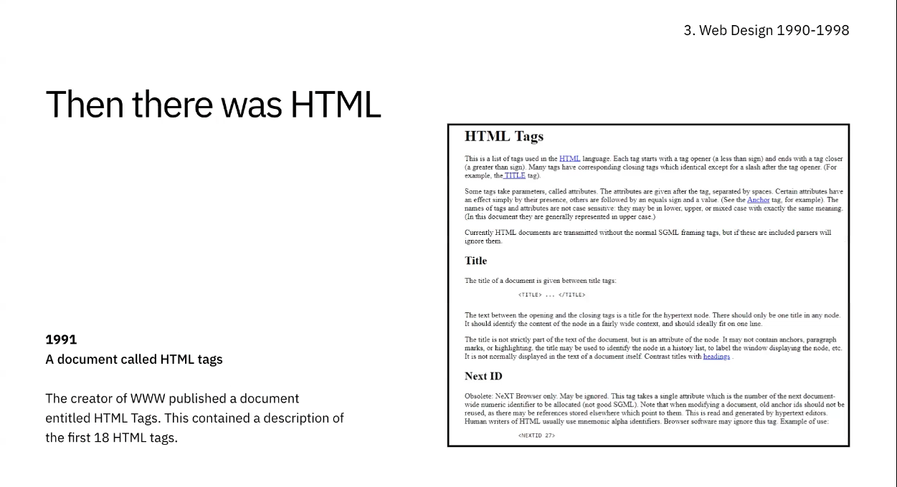 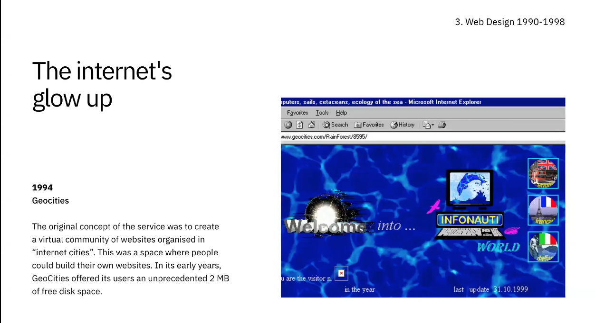
Then we started looking at User Personas and how they help us as designers to understand the user's needs, experiences, behaviors and goals. We will be creating a user persona as part of the first project to target our website at. We will be making a Venn Diagram, User Flow Map, Journey Map and User Persona.
Notes from lecture - "Every choice along the way should support the user to accomplish their goals. You will determine the logical steps taken by the user by creating a user flow.""
In the coding lecture we were intodcued to HTML. Using Visual Studio Code we can choose the programming language HTML and start to structure a website's contents. We start this by typing "!doctype html" this creates a standard template to build off.
Favicons first appeared in 1999 and Wikipedia was born in 2001! I never knew that those things in the tab were called favicons, they are a great way to individualize websites.
Notes from lecture - To explore user goals, you need to look at the world from the user's perspective. Get in their shoes and dwell into their needs. Venn Diagram - Overlapping circles to illustrate the logical relationship between two or more set of items.
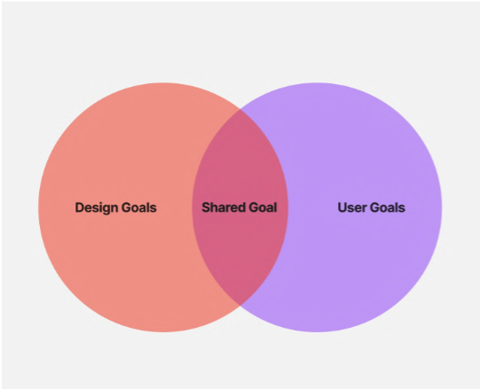 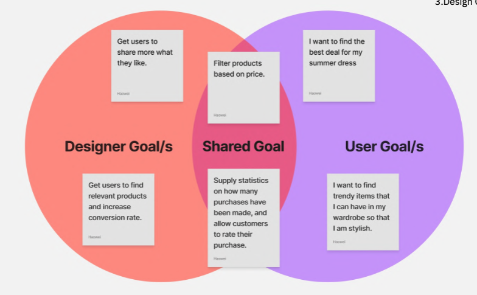
In the coding lecture we continued being introduced to HTML, and how it corrsponds to CSS. From my perspective (I've never understood or learnt about websites) it's very cool to see how websites come to life. Without a CSS style sheet the website looks like one of the early 90s websites we were shown last week. The content is all in the HTML and then everything to do with style like colour, font and composition is manipulated in the CSS style sheet. - "A file which tells a browser how to render a page."
In class we learnt about empathy maps. They are a way of researching individual's needs when interacting with a product, which may be different to our own. They are a great way to gain an insight into other people's experience, and from this we can design to improve the user's experience.
Notes from lecture - The customer journey is composed of distinct stages that customers progress through during their interaction with the product. Throughout the customer journey, customers experience a range of emotions that influence their perception of the product. Journey mapping is a powerful tool that offers various advantages to designers seeking to improve the user experience.
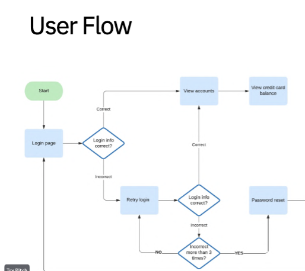 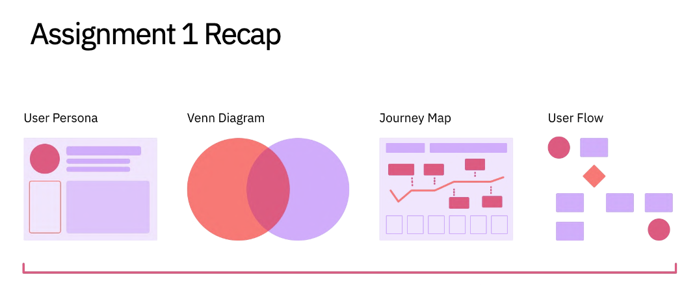
In this coding lecture we were taught about CSS Box Model's, something which encompasses the elements of the website. There are several components, including padding, margins, and borders.
In today's site of the week I liked the colours.
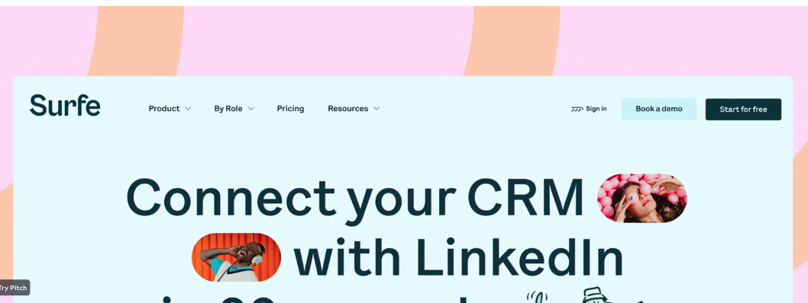
In class we continued working on Assignment 1. Today I've been making sure my Venn Diagram is looking good and that I haven't overlooked anything. I will refine the colour palette aswell.
A grid can be defined as an intersecting set of vertical and horizontal lines. CSS Grid layout separates a page into major sections. This is used to structure and manipulate components on our website.
In class today we learnt about typography and colour, and how it's applied to websites. Coding so far has been a little tricky to wrap my head around. Although I now understand the very basic fundamentals of web design there are things which I cannot begin to comprehend, like buttons and interactive elements like a flame following the mouse pointer. The website of the week was "Timex" and their website for watches was incredibly clean and aesthetically pleasing.
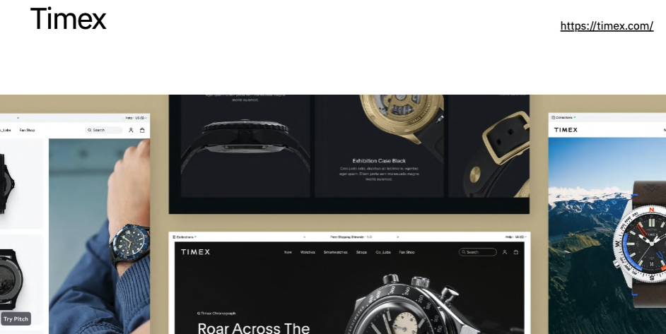
I will be creating wireframes and a high fidelity prototype for assignment 2.1 with at least two pages/routes. I think I will have a landing page which will have some showcased portfolios and then there will be a button for their portfolios.
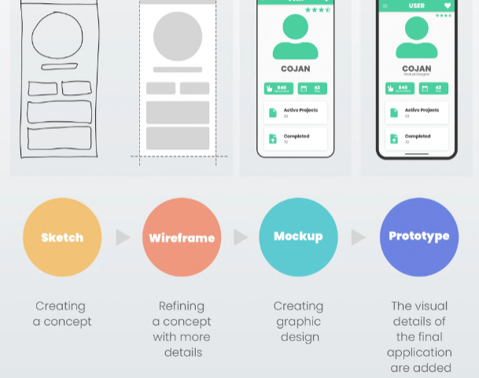
I need to find some websites for inspiration and start thinking about what layouts will be best. In figma we will be making multiple iterations and then developing one of them into a high fidelity prototype.
In this coding lecture we were introduced to GitHub. It seems quite complex and tricky to navigate but I think I understand the principle of it. Github is a code platform for sharing and collaborating.
Today we discussed grids and composition. Some examples of composition include scale, colour & typography, and visual hierachy. Grids are used for organizing the content on the page and creating alignment and order.
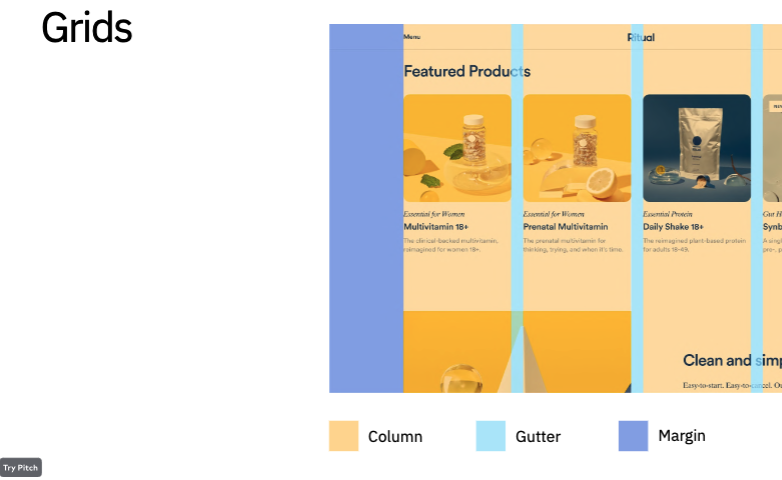 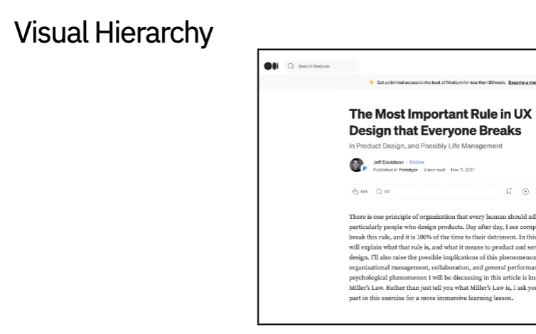
In design, affordances are used to help users know what they should do without having to use pictures, labels or instructions. They suggest how to interact with the design. They are key to UI/UX, and a great example of an affordance are push/pull doors - The handle of a door implies it should be pulled, and no handle implies it should be pushed.
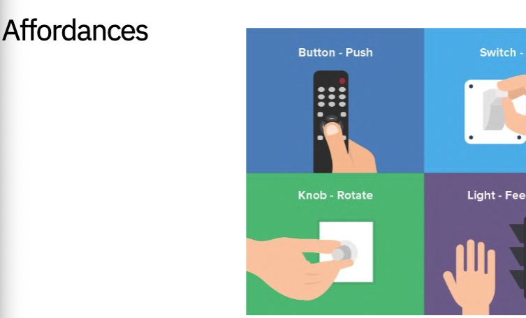
Today we talked about Assignment 2.2. We have two options - CMS or Coding. I think I will code the journal and give CMS a go, since they are more convinient and I want to see how they work in comparison with coding. To me, CMS is an alternative way of making websites, through the lens of the designer rather than coder. It is visually alot more stimulating and straight forward.
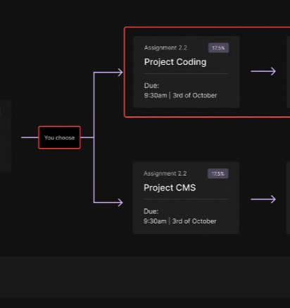
More on grids which help give order to the website.
Today the topic was responsive design and labelling files. Responsive design is how the website responds to scale when using different device sizes and viewports. We can test that our website does not have any unwanted breakpoints by using a device emulator.
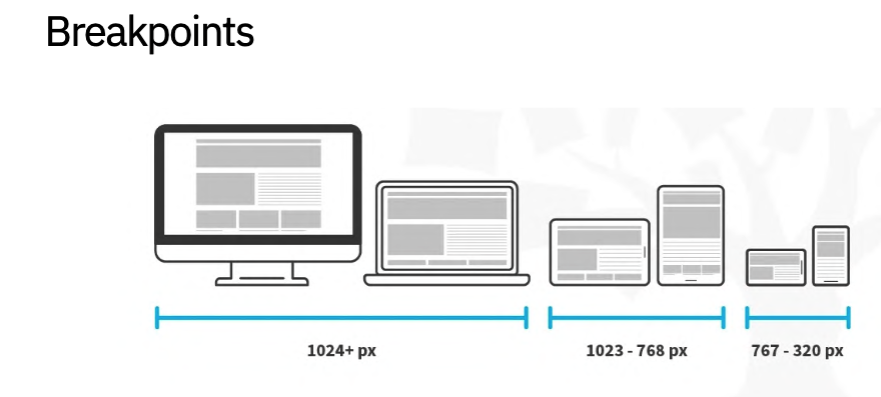
File organisation is very important because there are so many files that go into a website. If things are not organised I might struggle to edit and add things later on. It can also cause hindrance to time spent designing, by having to find files which are in unlabelled folders ect.
Today's website of the week had a very nice colour palette. I'm also fond of the font choice and the heirachy which comes with them.
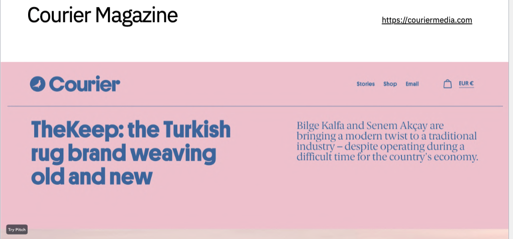
Today we were shown demonstrations of blogs from some of the tutors. They were nice. I'd like to make my blog have a landing page with buttons to navigate to the week's entry.
This week we had presentations. Unfortunately I was sick so could not make it to class. It's a shame because I was keen to see my peer's websites.
Blog Reflection - I'n not very fond of this journal, even though it's my first. I should have tried to create something more interactive so it wasn't that boring. It has been good having it here so I can recap and remember things from class more.
What are your overall thoughts about the course? - It's been interesting having everyone on a zoom call, with this is mind I think that the communication and clarity of the course has been well coordinated. I've really enjoyed learning the about the history of web design, and how to apply tools and techniques to create a website. I'm not sure if web design is for me as a career, but I'm sure it will come in very handy and I appreciate how it is done now and the history.